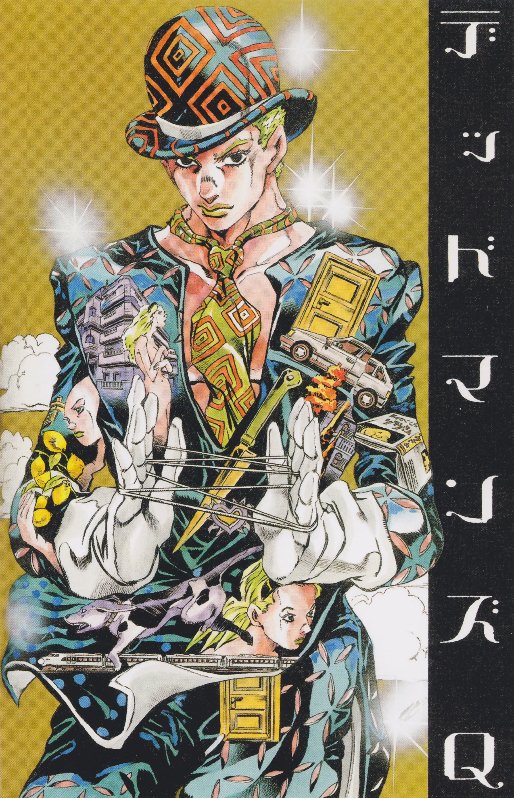

Hirohiko Araki
Hirohiko Araki ObrasHirohiko Araki é um artistade mangá japonês conhecido por sua sé rie JoJo's Bizarre Adventure, publicada pela primeira vez na revista Weekly Shōnen Jump em 1987, que até hoje já vendeu mais de 100 milhões de cópias só no Japão e que também é conhecida por suas frequentes referências ao rock ocidental e à Itália, ambos dos quais Araki supostamente gosta muito Araki cresceu em Sendai, no Japão, com seus pais e irmãs gêmeas. Ele cita os aborre cimentos de suas irmãs como a razão pela qual ele passava um tempo sozinho em seu quar to lendo mangás
Ele foi particularmente influenciado pelo trabalho do artista
francês Paul Gauguin.Depois
que um amigo da escola elogiou seu mangá, ele começou a desenhar secretamente de seus
pais. Ele enviou seu primeiro trabalho à uma revista em seu primeiro ano do ensino médio.
Todas as suas inscrições foram rejeitadas, enquanto outros artistas de sua idade ou mais
jovens já estavam fazendo estreias de sucesso. Ele decidiu ir aos escritórios das edito
ras em Tóquio para descobrir o porquê pessoalmente, levando um mangá que ele ficou acorda
do a noite toda para terminar.O editor da Shueisha que ele conheceu criticou muito o tra
balho, mas disse que tinha potencial e pediu para o ajeitar para os próximos prêmios Tezuka
.O mangá era Poker Under Arms. Araki é casado com Asami Araki e tem 2 filhos.
Araki deixou a Universidade de Educação de Miyagi antes de se formar, e fez sua es
tréia em 1980 com o one-shot de velho oeste Poker Under Arms, que era um "Trabalho Se
lecionado" no Prêmio Tezuka daquele ano.Sua primeira série foi Cool Shock B.T. em
1983, sobre um jovem mago que resolve mistérios.Mas a primeira série a mostrar sua
quantidade de violência gráfica foi Baoh de 1984.Conta a história de um homem que é
implantado com um parasita por uma organização do mal, dando-lhe poderes sobre-huma
nos, e segue como ele luta contra eles. Foi adaptado em um OVA em 1989, o mangá foi
lançado nos EUA pela Viz Media em 1990 (em tankōbon em 1995), mas o OVA não obteve um
lançamento nos Estados Unidos até 2002. Não foi até The Gorgeous Irene, em 1985, que
ele realmente desenvolveu seu estilo característico de arte de personagens muscula
res (que mais tarde se tornaria mais extravagante).
A edição de setembro de 2007 da Cell tinha uma capa desenhada
por Araki com uma ligase representada como um de seus Stands.Em 2008, Araki
desenhou a capa de uma coletânea com o conto de Yasunari Kawabata "A Dançarina de
Izu". Ele desenhou a capa para a edição limitada do single "Breeeeze Girl", da
banda japonesa Base Ball Bear, que na verdade pega uma imagem do mangá JoJo.
Em 2009, Hirohiko Araki foi um dos cinco artistas selecionados pelo Museu do Louvre
para criar obras originais no famoso museu. Sua obra, Rohan no Louvre, estrelou Rohan
Kishibe, de Jojo, e foi exibida na exposição intitulada "Le Louvre invite la bande
dessinée", que foi criada para mostrar a diversidade dos quadrinhos, de 19 de janeiro
a 13 de abril. No ano seguinte, Rohan no Louvre foi publicada na França e na Ul
tra Jump do Japão. Foi lançada nos EUA pela NBM Publishing em fevereiro de 2012.

De 17 de setembro a 6 de outubro de 2011, a loja Gucci em Shinjuku sediou a Exposição
Gucci x Hirohiko Araki x Spur "Rohan Kishibe Vai à Gucci" (em inglês: Rohan Kishibe
Goes to Gucci), uma colaboração entre a marca italiana de roupas de luxo, o criador
de JoJo e a revista de moda Spur.A exposição celebrou o 90º aniversário da Gucci
e contou com uma figura em tamanho natural de Rohan Kishibe, bem como numerosas ilus
trações de Araki; incluindo peças reais da coleção de outono/inverno da marca de
2011-2012 e seus próprios designs de moda originais. Para o Spur, Araki desenhou
"Kishibe Rohan conhece Gucci." (em inglês: Kishibe Rohan meets Gucci.), um one-shot
colorido com Rohan Kishibe, publicado na edição de outubro de 2011.Em sua edição de
fevereiro de 2013 a Spur mais uma vez executou um spinoff de JoJo por Araki, chamado
"Jolyne, Fly High com Gucci", estrelado por Jolyne Cujoh da Parte 6 de JoJo's Bizarre
Adventure. Uma tradução gratuita em inglês está disponível na página da Gucci no
Facebook.
Para aumentar a conscientização sobre os esforços da reconstrução das ruínas Hiraizumi
, que foram danificadas pelo terremoto e tsunami de Tōhoku em março de 2011 e declara
do Patrimônio Mundial da UNESCO em junho, Araki desenhou obras de arte representando
as ruínas. A "Exposição Hirohiko Araki JoJo" estreou em Sendai, terra natal de Ara
ki, no final de julho de 2012 para celebrar o 25º aniversário de Jojo's Bizarre Adven
ture, depois mudou-se para Tóquio em outubro.
Obras
Baoh
Deadman's Question
Jojo's Bizarre Adventure
Outlaw Man
